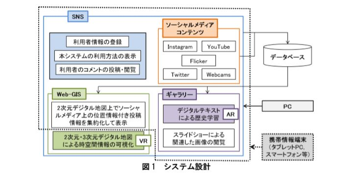
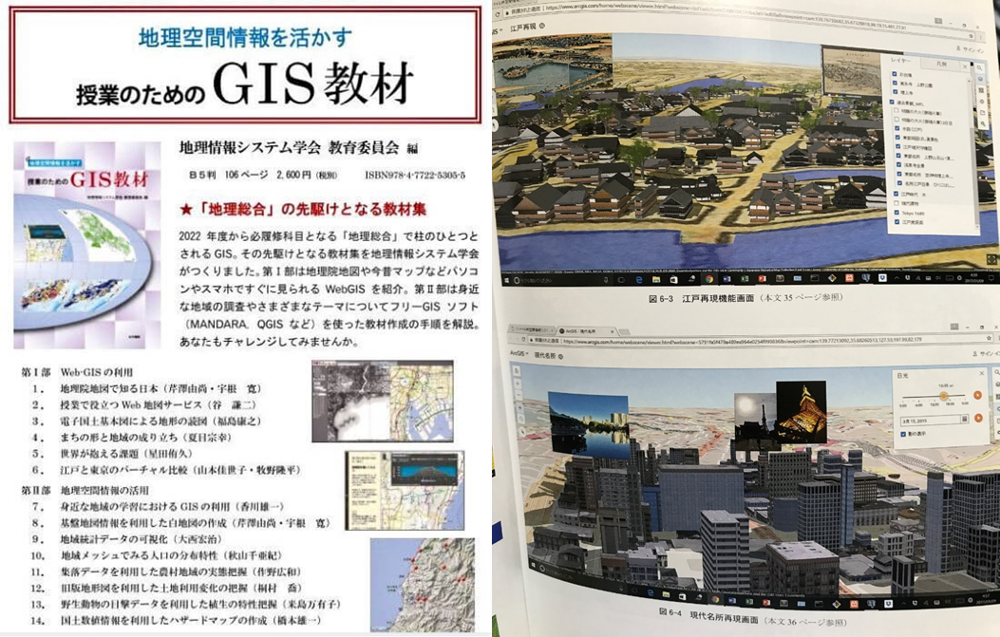

メディア掲載4:研究成果のプレスリリース
【メディアリリース】地理情報システム（GIS）と複合現実（MR）を用いた時空間情報システムの開発
－現実空間と仮想空間で時空間情報を可視化することにより教育及び観光分野の支援に貢献－
地理情報システム（Geographic Information Systems: GIS）、仮想現実（Virtual Reality: VR）や拡張現実（Augmented Reality: AR）の普及と幅広い分野での利活用という学術的・社会的背景を踏まえ，Web-GISと複合現実（Mixed Reality: MR）等を用いて、時空間情報を可視化するシステムを開発しました。開発したシステムの特性は、教育及び観光分野において、利用者が自身の嗜好や状況に応じて利用可能な独自機能を持つことです。
メディア掲載2:「地理空間情報を活かす授業のためのGIS教材」（古今書院）に掲載
2017年9月、地理情報システム学会教育委員会が刊行した「地理空間情報を活かす授業のためのGIS教材」において、本システムの学習系システムの一部の「江戸と東京のバーチャル比較」が、Web-GISの利用例として紹介された。
メディア掲載1:「教育GIS便り」相撲と両国と焼き鳥
2017年1月、ESRIジャパン株式会社の教育GIS便りに、「相撲と両国と焼き鳥」という記事が掲載された。
四代目将軍徳川家綱の治世時に起こったとされる「明暦の大火」後の都市計画と大きくかかわっている相撲文化、江戸から現代へどのように発展していったのか、「焼き鳥」とどういう関係があるのかを紹介している。
この記事に、学部4年次に作成した「バーチャル時空間情報システム」が、より細かく江戸と現代の東京都の情報を視覚的に表示したシステムとして紹介された。